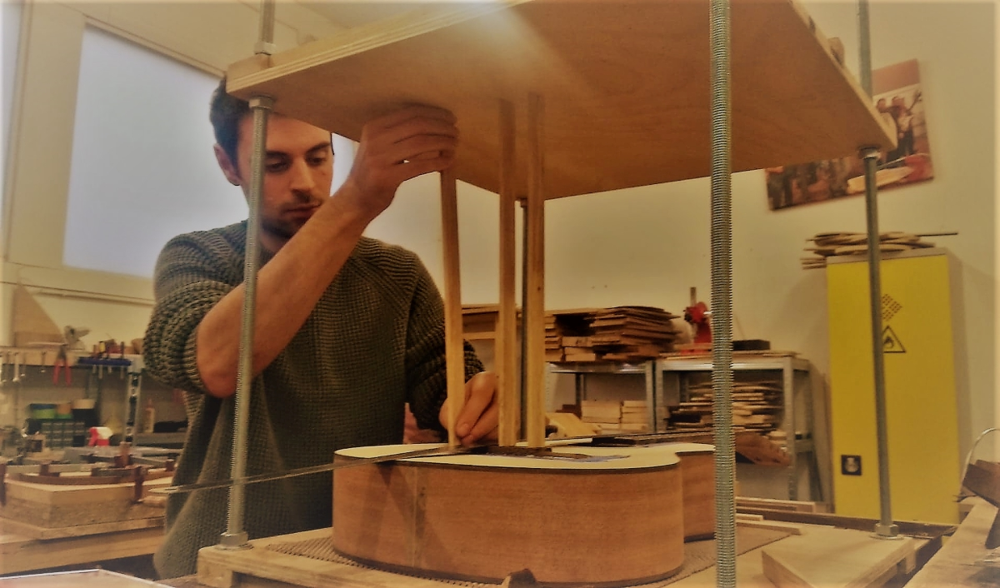

Voisil Guitare: La Lutherie accessible à tous.
Faire appel aux services d'un luthier pour entretenir, réparer ou fabriquer son instrument de musique est un service encore peu accessible de part ses couts financiers importants. L'importation des matériaux, notamment le bois, et l'achat d'outils représentent des couts considèrable dans la réalisation d'une guitare. Afin de vous proposer des prix plus abordables, j'ai décidé de fabriquer mes propres outils de travail et priviligier les produits locaux pour la fabrication et l'entretien de vos guitares (bois, verni..).
Je peux également travailler avec des bois et du matériel très haut de gamme pour les personnes ayant un budget plus conséquent.
Tous les services proposés sont garantis 2 ans.
J'offre également une garantie à vie (sans frais cachés) pour vos projets de créations de guitares.
N'hésitez pas à me contacter si vous etes à la recherche d'une prestation qui n'apparaitrait dans pas le tableau ci-dessous et je mettrais tout en oeuvre pour réaliser votre demande.
| Type de guitare | acoustique | électrique | basse |
|---|---|---|---|
| Réglage standard, incluant le remplacement des cordes | 40 | 50 | 50 |
| Planimétrie + réglage | 110 | 90 | 100 |
| Détection de panne électronique | / | 20 | 20 |
| Electronique : intervention simple (switch, potentiomètre) | / | 20 | 20 |
| Electronique : remplacement d'un micro | / | 25 | 25 |
| Remplacement d'un sillet | 40 | 40 | 40 |
| Remplacement des mécaniques d'accordage | 40 | 40 | 40 |
| Polissage de la table | 120 | 120 | 120 |
prix affichés TTC*